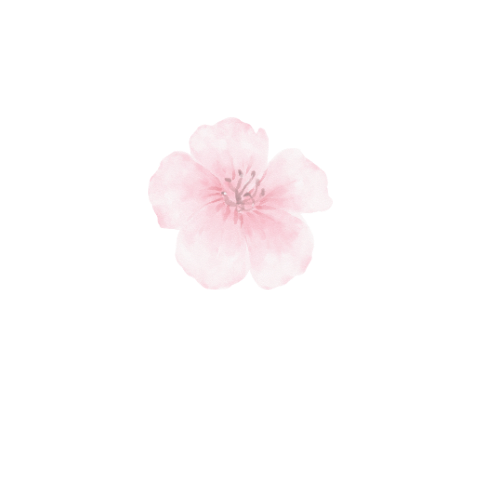

Con la Matrice
Portiamo luce e chiarezza sui tuoi schemi e sul tuo potenziale.

Mi chiamo Silvia e la mia storia professionale nasce con una laurea in Scienze dell’Educazione. Per molti anni ho lavorato a stretto contatto con famiglie e bambini, ma è stato con la nascita di mia figlia che qualcosa dentro di me ha vissuto una vera e propria fioritura.
Da questa trasformazione personale è nata la Mappa della Fioritura: uno strumento d’amore e scoperta che utilizza la Matrice del Destino e la data di nascita per accompagnare adulti e ragazzi a comprendere a fondo la propria identità, i propri talenti e le dinamiche di relazione.

“Se la Matrice del Destino è la mappa che ci mostra chi siamo e dove stiamo andando, il Reiki è il soffio di energia che ci sostiene nel viaggio.”
Lavorando con le persone mi sono resa conto che la sola consapevolezza mentale a volte non basta: i blocchi, le paure e i condizionamenti vivono anche nel nostro corpo energetico. Per questo ho integrato i trattamenti Reiki nei miei percorsi:
Portiamo luce e chiarezza sui tuoi schemi e sul tuo potenziale.
Riequilibriamo il campo energetico, sciogliendo le tensioni per permetterti di radicare davvero quella consapevolezza nella tua vita quotidiana.